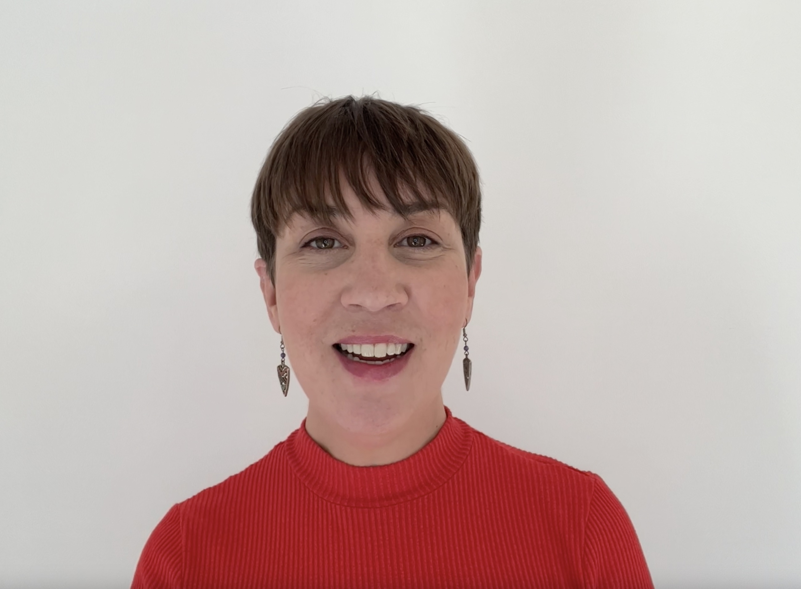
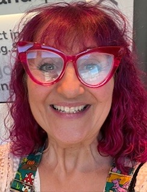

CNENet 2026 Conference
Innovating Clinical Education
Change is everywhere and clinical educators are always eager to be at the forefront. This year, CNENet will focus on innovations in clinical education. We want to hear about everything from how you use large language models like ChatGPT to creative approaches to art in clinical education - so please submit your abstracts to be considered for oral or poster presentation!
It’s an exciting year for the CNENet conference, with a mix of new opportunities and some familiar favourites. Attendees can choose from three optional workshops, explore ideas and products from our exhibitors, and take part in the Randomised Coffee Trial to meet other clinical educators and build connections in a relaxed, informal way.
We invite you to join us, share your experiences, and be inspired by the latest developments in clinical education across the UK.
Dates: 10 July 2026
Host: Birmingham and Solihull NHS Mental Health Trust
Venue: The Uffculme Centre
Travel: There is limited parking at the venue, so please arrive early to secure a space. The nearest train station is Birmingham New Street with excellent bus connections to the venue via routes 50 and 35, which are accessible from Moor Street outside Selfridges
Keynote Speaker
We’re delighted to welcome Professor Nicola Ranger as our keynote speaker for the 2026 conference. Drawing on her extensive leadership experience in nursing across the UK and internationally she will share her insights on the factors driving innovation in clinical education and shaping its future.
RCN General Secretary and Chief Executive Professor Nicola Ranger joined the Royal College of Nursing in December 2022 as the Chief Nursing Officer. In 2024 she was appointed General Secretary and Chief Executive of the RCN. She was previously Chief Nurse and Executive Director of Midwifery at King’s College Hospital NHS Foundation Trust in London. Before that, she held Chief Nurse posts at both Brighton and Sussex University Hospitals NHS Trust and Frimley Health NHS Foundation Trust.
She has also held a number of senior nursing roles at University College London Hospitals NHS Foundation Trust and Surrey and Sussex Healthcare NHS Trust. Earlier in her career, she worked at America’s George Washington University Hospital in Washington and at Mount Sinai Medical Centre in New York.
Optional Workshops

With over 25 years’ experience in healthcare education, Olivia has designing and delivering communication training from introductory foundations to advanced level programmes, tailored to diverse clinical contexts.
Her work focuses on creating powerful thinking environments, She is especially interested in how curiosity transforms education into a space of genuine play
Workshop Outline: Innovation in education does not always come from new content or technology—it often comes from the conditions we create.
This interactive workshop explores the art of play in healthcare education: what happens when we loosen our attachment to outcomes, trust the learning process, and create environments where curiosity, connection, and purpose are prioritised.
Through live reflection and practical micro-experiments, we will explore the tension between agenda and purpose, ask who is really doing the thinking in our teaching, and examine how the components of a Thinking Environment support us to create spaces where play, presence, and new thinking can emerge.
Participants will leave re-energised in their purpose as educators and the conditions that make innovative learning possible.

Margaret Struthers is a registered social worker and senior lecturer in social work at Manchester Metropolitan University. She is lead practitioner for simulation-based education within the social work department. Margaret has worked in children and family social work, adult and youth criminal justice, and specialist domestic violence and abuse services. She has practised, taught, and researched in the field of domestic violence and abuse for the last 15 years.
Workshop Outline:
Margaret has developed a bespoke domestic abuse and coercive control simulation for social work students. The simulation is grounded in frontline practice experience and shaped by feedback from victims and survivors about their interactions with professionals. Although created for social work education, the issues addressed are cross-cutting and relevant to all professionals across health and social care.
In this workshop you will explore the simulation design and its underpinning principles. These will be brought to life through the opportunity to experience and practise selected elements yourself. The session will conclude with structured reflection to enable you to apply learning to your own role and professional context.
Through the simulation you will explore deficit-based and strengths-based approaches to communication. You will observe in real time how each shapes outcomes within an authentic practice scenario. By connecting the thinking behind the design with your lived experience of participating, Margaret will demonstrate how the simulation strengthens participants’ ability to:
- Recognise signs of domestic abuse and coercive control
- Communicate thoughtfully and effectively with victim–survivors
- Respond appropriately and safely to perpetrators
- Reflect on the impact of their professional approach
The workshop will combine clarity about simulation design with practical experience, ensuring that learning is both immediately relevant and transferable to practice.
Oscar is the theme lead for Leadership Development at BMJ Leader, a Senior Associate Tutor and Leadership Module Lead for Oxford University. In 2025 he and his team published research synthesising data from 86 reviews and more than 1600 primary studies. His sessions are interactive, entertaining, and rigorous.

Workshop Outline:
This highly practical workshop will give you two advantages. First, you will experience leadership development in action — not just as theory, but as lived practice. Second, you will gain the insight and confidence to commission leadership development that genuinely works.
This session will help you make sharper, more confident decisions whether you are responsible for commissioning programmes, designing them, delivering them, or participating in them.
Grounded in definitive published research, the workshop will translate best practice into clear, usable guidance. At the end of the workshop you will be able to:
- Clarify what effective leadership development looks like
- Articulate what you and your organisation need leadership development to deliver
- Distinguish high-impact approaches from costly distractions
You will leave with practical tools and clearer judgement — able to assess leadership development opportunities with confidence whether you are buying, building or participating.
Randomised Coffee Trial 2026
The Randomised Coffee Trial (RCT) is a fun and informal networking opportunity for clinical nurse educators. If you choose to participate, you will be paired with another randomly selected participant from the conference. You will receive their name and contact details ahead of the event.
The idea is simple: arrange a short meeting, coffee, or lunch with your match during the conference. It’s a great way to meet new colleagues, share experiences, and build professional connections in a relaxed setting.
Participation is completely optional. When you sign up you’ll be offered the opportunity to take part in the Randomised Coffee Trial.
Abstract Submission
Delegates are invited to submit their work for the CNENet 2026 Conference until 30 April 2026. You may submit an abstract for an oral presentation, a poster presentation, or both.
Each abstract should be no more than 300 words and should clearly outline your work, findings, or innovative practice in clinical education. This is a great opportunity to share your experience and ideas with fellow clinical educators across the UK.
Please use the submission form below to submit your abstract:
Join Us at CNENet 2026!
CNENet 2026 promises to be an inspiring and engaging conference for clinical nurse educators across the UK. You’ll have the opportunity to explore innovations in clinical education, take part in workshops, meet fellow educators through our Randomised Coffee Trial, and present your work.
Whether you’re looking to learn, network, or showcase your ideas, CNENet 2026 offers something for you. Don’t miss this chance to connect, collaborate, and be part of the conversation shaping the future of clinical education.
Exhibitors
We would like to extend our sincere thanks to all our exhibitors for supporting CNENet 2026. Be sure to visit their websites to learn more about their products, services, and ideas for clinical education.